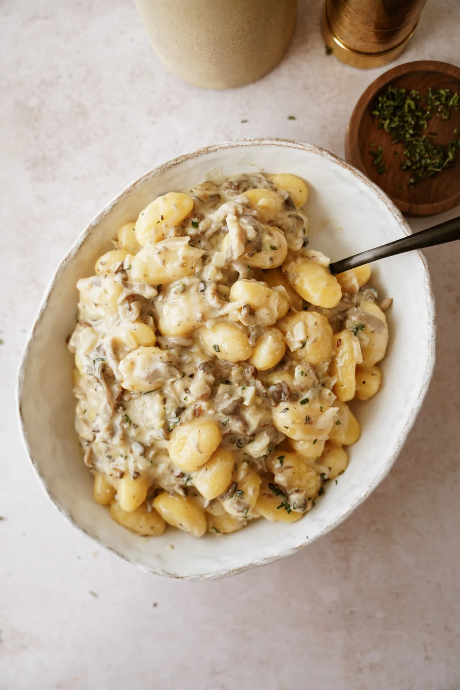

приготовление:
-
Вскипятить подсоленную воду и добавить 500 г ньокки. Варить до всплытия. Слить воду, сохранив 60 мл жидкости от варки для соуса. Готовые ньокки промыть холодной водой, полить 1 ч. л. оливкового масла и аккуратно перемешать, чтобы они не слиплись. Отложить.
-
В широкой сковороде растопить 4 ст. л. сливочного масла. Добавить мелко нарезанную 1 среднюю луковицу и 3 измельчённых зубчика чеснока, обжарить на среднем огне 3–4 минуты до мягкости. Добавить 200 г вешенок или других грибов и готовить 5–6 минут, пока грибы не подрумянятся, а лишняя влага не испарится.
-
Влить 60 мл белого вина или комбучи и почти полностью выпарить жидкость. Добавить 125 мл сливок 15–20%, 1 ст. л. свежего тимьяна или щепотку сушёного и 60 мл воды от варки ньокки. Довести до лёгкого кипения и готовить 3–4 минуты.
-
Вмешать 50 г тёртого пармезана, чтобы соус загустел. Добавить трюфельную соль и чёрный перец по вкусу, снять с огня. Соус можно остудить и хранить в холодильнике до двух суток. Перед подачей разогреть на слабом огне, добавив немного воды или сливок, если он стал слишком густым.
-
Добавить подготовленные ньокки в разогретый соус и прогреть вместе 2–3 минуты. Перед подачей полить 1 ч. л. трюфельного масла.